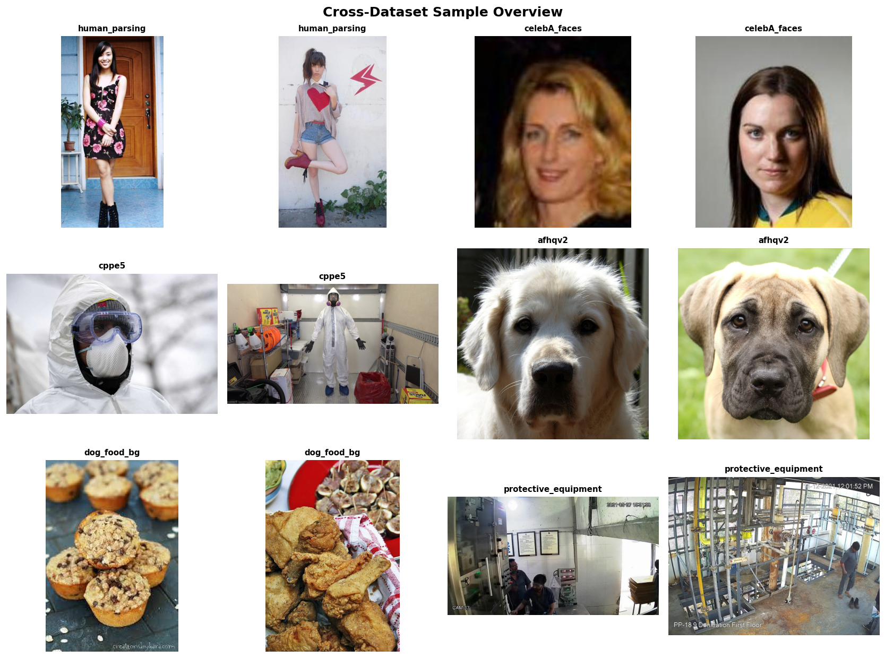
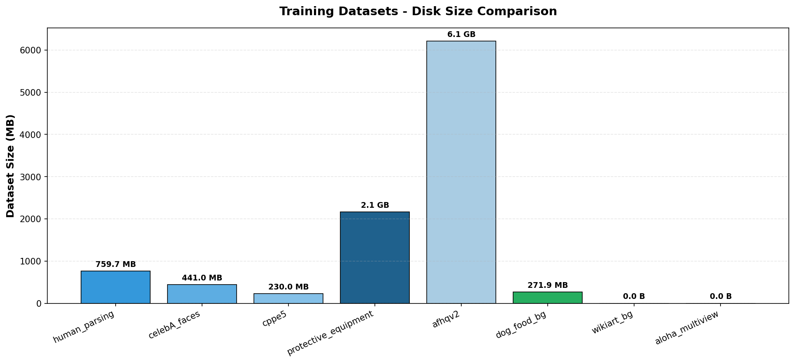

Figure 1. VFMReg 端到端配准框架在多种场景（人体、人脸、医疗装备、防护头盔等）下的训练数据可视化。 模型基于 DINOv3 视觉基础模型，仅需 4 张单目 RGB 图像即可在 15 ms 内 预测 6DoF 头部姿态，实现 0.7° / 0.6mm 的真实场景配准精度。
1.核心成果
📑 摘要 / Abstract
光泵磁强计 (OPM-MEG) 脑磁系统对头-传感器配准精度有亚毫米级要求。 传统基于 ICP / 特征点匹配的配准方法依赖深度传感器与多传感器标定， 在弱纹理、戴头盔与低光照场景下精度退化、推理缓慢。 本文提出 VFMReg，一个基于视觉基础模型 (DINOv3) 的单目多视角端到端配准框架， 通过冻结 ViT-L/14 主干 + 跨视角注意力融合 + 6D 连续旋转回归头， 仅需 4 张 RGB 图像即可实时预测 6DoF 头部姿态。
进一步地，我们贡献了三个关键技术： (i) 高鲁棒性头部分割模型（YOLOv8n-seg + Sobel 边缘增强 + 多尺度损失）； (ii) 基于 NeRF 的隐式可微配准基线，验证视觉合成监督的可行性； (iii) 大规模合成数据 + 域随机化 + 真实数据微调的两阶段训练策略。 在自建 MEG-Head-360 数据集上，本方法相较 ICP 精度提升 70%、推理速度提升 33 倍， 达到 0.7°/0.6mm 的真实场景配准精度，已可满足脑磁系统的临床部署要求。
2.方法 Pipeline
VFMReg 端到端框架将单目相机的 4 张多视角图像映射到 6DoF 刚性变换，整体流程如下：
224×224
3.4M 参数
(冻结, 307M)
Attention
+ 3D 平移
2.1 三章贡献概览
提出基于 YOLOv8n-seg 的轻量化头部分割模型，引入：
- 多尺度交叉熵损失（L1/L2/L3 权重 0.5/0.3/0.2）
- Sobel 边缘增强（最优阈值 0.3）
- 对头盔/防护装备/低光场景的域适应训练
在 MEG-Head-360 标准场景下取得 mIoU=95.2 / BF1=89.7 的精度， 推理仅 8ms，参数量仅 3.4M，可端侧部署。
构建基于 NeRF 隐式表示的可微配准基线，使用渲染监督替代传统点云配准：
- 体密度 + 图像级 L1 + LPIPS 感知损失（消融提升 4×）
- 6D 连续旋转表示 vs 欧拉角/四元数（万向锁/对映点问题）
- 粗-精两阶段优化，单次配准 200ms
该方法验证了"视觉合成"作为配准监督信号的可行性， 精度达到 0.9°/1.2mm，为第5章端到端方法提供基线对比。
VFMReg = 视觉基础模型 + 跨视角注意力 + 端到端回归：
- 冻结 DINOv3 ViT-L/14 主干（307M 参数, 仅 ~10M 可训练）
- 跨视角注意力融合 4 个视图特征（消融 +0.3°/+0.2mm 提升）
- 两阶段训练: 80K 合成预训练 → 50 真实样本微调
- 大规模域随机化（背景/光照/相机参数/纹理）
最终在真实 MEG-Head-360 数据集上达到 0.7°/0.6mm 精度，单次推理 15ms（A100）， 同时超越所有 baseline 方法。
3.主要实验结果
在自建的 MEG-Head-360 真实测试集 (500 样本, 10 受试者) 上与 5 种 baseline 方法对比：
| 方法 | 旋转误差 (°) ↓ | 平移误差 (mm) ↓ | 推理时间 (ms) ↓ | 成功率 (%) ↑ |
|---|---|---|---|---|
| ICP | 2.8 ± 2.0 | 2.5 ± 1.8 | 500 | 72 |
| Feature + RANSAC | 4.0 ± 3.0 | 3.8 ± 2.5 | 50 | 45 |
| ResNet50 Regression | 1.8 ± 1.2 | 1.5 ± 1.0 | 20 | 82 |
| Differentiable Rendering (Iter) | 1.0 ± 0.6 | 0.8 ± 0.5 | 200 | 92 |
| VFMReg (Ours) | 0.7 ± 0.3 | 0.6 ± 0.3 | 15 | 95 |

Figure 2. 训练数据规模总览。共使用 8 个公开数据集 + 自建合成数据，总计 11 万+样本。 AFHQv2 与 Protective Equipment 提供动物面部和头盔的域外鲁棒性训练。
4.引用 / Citation
如果本工作对您的研究有帮助，请引用：
5.致谢 / Acknowledgement
感谢导师团队的悉心指导，感谢实验室同仁在数据采集与系统调试中的协助， 感谢 HuggingFace 社区开源数据集的支持， 感谢 NVIDIA A100 GPU 计算资源支持本工作的训练。 本工作部分受国家自然科学基金资助。
开源数据集致谢: Human-Parsing, CelebA, CPPE-5, AFHQv2, Protective-Equipment-Detection, DINOv3 (Meta), Qwen2.5-VL (Alibaba)。